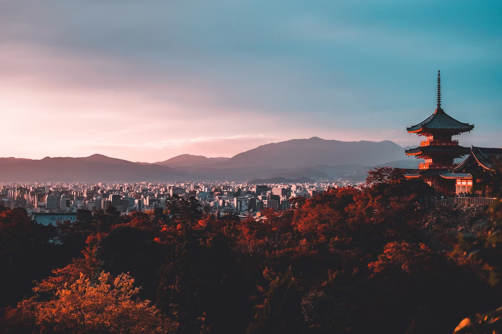
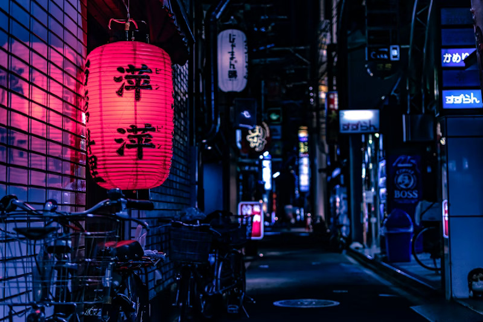
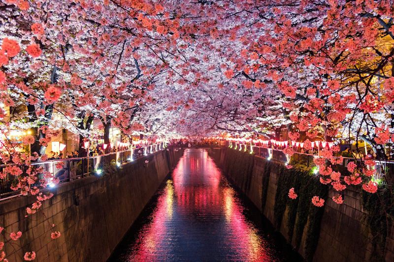

Founded in 628 AD, Senso-ji is Tokyo's oldest and most beloved temple — a place where incense smoke drifts past a towering crimson gate and the hum of prayers mingles with the bustle of the city. Dedicated to Kannon, the Buddhist goddess of mercy, it has been a spiritual heart of the city for nearly fourteen centuries.



Visitors enter through the iconic Kaminarimon — the "Thunder Gate" — flanked by ferocious guardian deities and hung with a massive 700-kilogram red lantern. A long pedestrian lane called Nakamise-dōri leads deeper into the complex, lined with stalls selling traditional crafts, street food, and lucky charms that pilgrims have sought for generations.
Though the main hall was destroyed in World War II and rebuilt in 1958, the temple's spirit endures unchanged. Today, over 30 million visitors arrive each year — many to draw an omikuji fortune slip or offer a prayer before the golden image of Kannon, carrying on a ritual that has continued without interruption since before Tokyo was even called Tokyo.